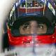

|


Visi komentarai priklauso autoriams. Mes neatsakome už jų turinį.
| Katonas (Mindaugas) | Parašyta: 2008/10/28 18:05 Atnaujintas: 2008/10/28 18:19 |
Veteranas   Pranešimų: 3583 |
Saunia apzvalga parase Adomas
 , labai gerai kad gali zmogus skirti laiko. Kaip keista perziurejau pirma rata nei vieno incidento, tiesiog puiku, taip pat negavau nei vieno skundo i savo pm, nebent gal kas bryliui siunte, jei bus skaundu jie bus isnagrineti artimiausiu metu , labai gerai kad gali zmogus skirti laiko. Kaip keista perziurejau pirma rata nei vieno incidento, tiesiog puiku, taip pat negavau nei vieno skundo i savo pm, nebent gal kas bryliui siunte, jei bus skaundu jie bus isnagrineti artimiausiu metuP.S dekui Honda team uz pranesima, kas netingi dar galite parasyti man savo pranesimus i pm beje ramstai ar susuksi koki filmuka, suprantu kad neturi laiko, o gal yra koks zmogus kuris moka ir nori kurti video? |
| Ramstas (Tomas) | Parašyta: 2008/10/28 18:15 Atnaujintas: 2008/10/28 18:15 |
  Pranešimų: 724 |
Taip, gerai padirbeta
 |
| Webster (Andrius) | Parašyta: 2008/10/28 18:55 Atnaujintas: 2008/10/28 18:55 |
Administratorius   Pranešimų: 2380 |
Labai sauni naujiena, puikiai padirbeta.
|
| Adomas | Parašyta: 2008/10/28 19:20 Atnaujintas: 2008/10/28 19:25 |
 Pranešimų: 846 |
Pirma kart teko kazka tokio rasyt, reike prisimint lietuviu kalbos pamokas
 . .Pats matau nemazai klaidu savo straipsni. Tokius dalykus reik moket daryt. Nebuvau niekad pavyzdys lietuviu kalbos rasineliuose. |
| gotmilk?(Vygis) | Parašyta: 2008/10/28 23:38 Atnaujintas: 2008/10/28 23:38 |
Moderatorius   Pranešimų: 1020 |
Sauni naujiena :) kaip tiems BMW nesiseka tai neisivaizduojat :) su kiekvienu etapu vis greiteju ir greiteju, bet niekaip nesugebu lenktyniu pravaziuot, tai kas pasimaiso tai netas nutruksta, zodziu sunkus laikai :)
|
| Katonas (Mindaugas) | Parašyta: 2008/10/29 9:00 Atnaujintas: 2008/10/29 9:00 |
Veteranas Pranešimų: 3583 |
Vygi, ateis ir i tavo kiema svente kada nors,nes greicio tai tikrai nemazai turi igaves, gaila kad ir Nerijiui nesiseka, na BMW tikrai atsigaus
|
| Ainars-1 | Parašyta: 2008/10/29 12:41 Atnaujintas: 2008/10/29 12:41 |
 Pranešimų: 8 |
Sveiki. Del klipo kurimo, nelabai turiu laiko, bet manau savaitgali tokio atrasciau, tad, jei kur nors patalpintumet replay, atsisiusciau ir pabandyciau ka sususkt, nors pazadet tikrai negaliu. Tik butu gerai, jei imciaus sio reikaliuko, kad paminetumet tai, ka reiketu ikelti i klipa, - idomiausius momentus ir tt..
|
| Katonas (Mindaugas) | Parašyta: 2008/10/29 17:47 Atnaujintas: 2008/10/29 17:50 |
Veteranas Pranešimų: 3583 |
upluodinau replay, taip pat sukuriau tema forume tad kas nori i klipa papulti lai apsireiskia forume ir paraso savo idomiu ivykiu kordinates, taip pat butu labai smagu jei sulauktume tiek ramsto klipo tiek Ainars-1 klipo
|
| Andrius (brylius) | Parašyta: 2008/10/30 1:31 Atnaujintas: 2008/10/30 1:31 |
Administratorius  Pranešimų: 3314 |
Sauniai padirbeta kol manes nebuvo, smagu matyt, jog ir kiti prisideda prie F1 turnyro veiklos. Malaciai visi
|
| Arunis | Parašyta: 2008/11/1 10:09 Atnaujintas: 2008/11/1 10:09 |
  Pranešimų: 104 |
McLaren pilotas bandytojas atsipraso Nerijaus uz sugadintas lenktynes... Kazkaip atsipalaidavau, pamaciau kad prarandu tempa lyginant su Mindaugo ir teko paspaust. Persistengiau ir klaida, kuri kainavo labai daug... Sorry BMW
 |
| vivec (Nerijus) | Parašyta: 2008/11/1 13:11 Atnaujintas: 2008/11/1 13:11 |
 Pranešimų: 181 |
jau man kokia kurijozishka situacija buvo tai nelinkiu niekam tokios.... :D gavau bauda uz greicio virshijyma boksuose nu ir per 3 ratus turejau atlikti ja tai nukeliau ant pacio paskutinio rato ir galvojau kad ta bauda yra 10 sec nu kai sustoji ivaziavau i boksus atlikti baudos ziuriu mechanikai manes laukia galvojau nu del baudos o pasirodo jie sumaste mane aptarnaut taigi ishvaziaves ish boksu gavau DQ :( o pasirodo bauda buvo tiesiog pravaziavimas pro boksus... kaip sakoma gyveni ir mokaisi
|
| Katonas (Mindaugas) | Parašyta: 2008/11/1 13:37 Atnaujintas: 2008/11/1 13:37 |
Veteranas Pranešimų: 3583 |
Vivec>> man ir taip yra buve, vaziuoju galvojiu lyg gavau DT bauda, bet ziuriu stovi draugeliai tai irgi sustojau, daug laiko praradau
|
| vivec (Nerijus) | Parašyta: 2008/11/5 14:42 Atnaujintas: 2008/11/5 14:42 |
Pranešimų: 181 |
e kur dinge adminai.. vopshe nebeaktyvus nei servo pakurto nera nei baudu paskelbta nieko... aisq prades cia puse stumt ant manes kad nevisi laiko turi ir panashiai... bet cia nemano bedos jei negalit tai nafink ish vis imtis darbo kurio negalit patemt???
|
| vivec (Nerijus) | Parašyta: 2008/11/5 14:50 Atnaujintas: 2008/11/5 14:50 |
Pranešimų: 181 |
oj kaip piktai parashiau bet gal bishki paspaudes adminus atsibus
 |
| gotmilk?(Vygis) | Parašyta: 2008/11/5 15:37 Atnaujintas: 2008/11/5 15:37 |
Moderatorius Pranešimų: 1020 |
sventes visiems buvo, nebuvo laiko cia sedet, greitu laiku manau pasipildys naujienom viskas
|
| Katonas (Mindaugas) | Parašyta: 2008/11/5 17:16 Atnaujintas: 2008/11/5 17:16 |
Veteranas Pranešimų: 3583 |
Baudu nera, bent as skundu negavau, brylius kraustosi i kita buta neturi jis laiko nei ka daryt nei ka, del servo nieko nezinau nes as jo nevaldau, beje vivec jei toks gudras, prasom parasyk Turkijos gp pristatyma
|
| vivec (Nerijus) | Parašyta: 2008/11/5 17:24 Atnaujintas: 2008/11/5 17:24 |
Pranešimų: 181 |
parashyciau bet kad nesu gudras tai...
|